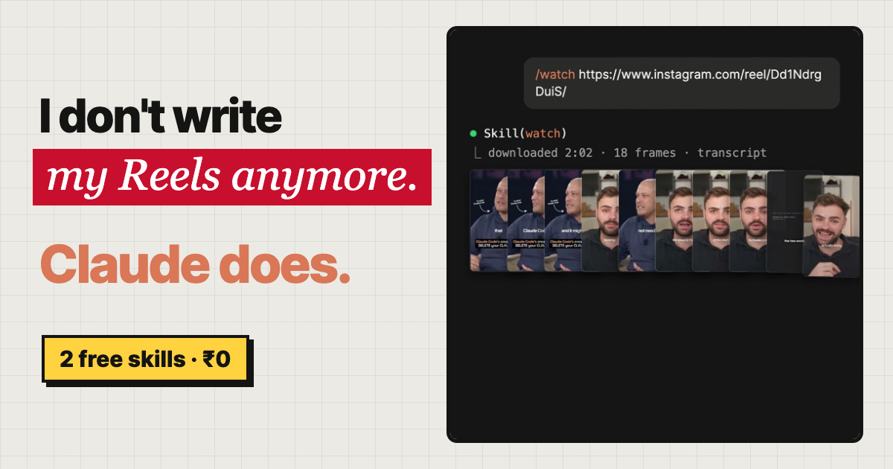

From the reel · Creator workflow
I don't write my Reels anymore. Claude does.
This is the exact free setup behind my Reels. Claude watches any viral Reel, tells me why it worked, finds the pattern across ten of them, then writes my version and scores the hook before I record. Two open-source skills, zero rupees.

One viral Reel is luck.
Ten share a formula.
Most creators guess. They see a Reel blow up, try to copy the vibe, and wonder why theirs flops. The difference is that this setup actually watches the video, every frame and every spoken word, and tells you what made it work in plain terms: the hook, the structure, the visuals and the call to action.
My Reel about Claude Code's creator saying "delete your CLAUDE.md" was built exactly this way: Claude watched a viral Reel on the same news, broke it down, and wrote a sharper version for my audience.
The system
Five steps, every Reel.
Paste any Reel link
Claude pulls the frames and the transcript and actually sees the video, not just the caption.
Why it blew up
The hook in the first 3 seconds, the structure, the visuals, the CTA and the reason people commented.
Ten Reels at once
Drop in a batch and Claude finds the one thing they all share. That is the formula.
Views lie
400K views on a 2M-follower account is a normal day. 400K on a 4K account found something. Rank by how far a Reel beat its own account's average.
Your version, scored
Claude writes the script in your voice, scores the hook before you record, and strips lines that sound like AI.
Zero rupees
Both skills are free and MIT licensed. You only need Claude Code.
Install
Two skills. About ten minutes.
/watch (claude-video, 18K+ stars)
Turns any video link or file into timestamped frames and a transcript that Claude can read. Run these inside Claude Code, one at a time, then start a new session and type /watch.
/plugin marketplace add bradautomates/claude-video /plugin install watch@claude-video
It needs Python 3.10+, FFmpeg and the latest yt-dlp on your computer. On a Mac: brew install python ffmpeg yt-dlp. Windows and Linux steps are in the claude-video README. MIT licensed.
instagram-agent-skill
Thirteen Claude skills that run an Instagram account: /ig-viral finds what is working and ranks it by outlier multiple, /ig-reel writes Reels off 26 scored hook formulas, /ig-caption and /ig-human make captions sound human. No signup, no API key.
/plugin marketplace add Jakeschincariol/instagram-agent-skill /plugin install instagram-agent
Then spend ten minutes on your voice file: send Claude three of your own Reels and say "write my voice.md from these". Every skill reads it. Source: Jakeschincariol/instagram-agent-skill, MIT licensed.
The exact prompts
Copy, paste, record.
/watch [paste the Reel link] Break this Reel down for me: the exact hook in the first 3 seconds and why it stops the scroll, the structure beat by beat with timestamps, what is on screen during each beat, the call to action, and the one reason it got so many comments. Then tell me what I should copy and what I should do better.
Use /watch on each of these Reels: [paste up to 10 links, one per line] For each one, give me the hook, the format and the CTA in one line. Then find the patterns they share: hook type, length, first-frame visual, story structure and CTA style. Rank the patterns by how many Reels use them, and give me the one formula I should use next.
/ig-reel Using the breakdown and the pattern above, write my version of this Reel for my audience in my voice.md. Give me three hooks, score them, and pick the strongest. Then write a 20-second and a 45-second script in simple spoken English, with on-screen text and a timed beat sheet. One CTA keyword: [KEYWORD].
/ig-caption Write the caption for this Reel. Put "Comment [KEYWORD] and I'll send you..." as the first line, explain the value step by step, repeat the CTA at the end, add a line of search keywords, and finish with 5 focused hashtags. Then run /ig-human on it and remove anything that sounds like AI.
Good to know
Three things that save you time.
Instagram says no?
Instagram sometimes blocks downloads. Save the Reel to your computer and give /watch the file instead of the link.
Not other people's videos
Use the breakdown to learn the formula, then make your own Reel with your face, your topic and your proof. Never re-upload someone else's content.
Fill in voice.md first
Ten minutes on your voice file is the difference between scripts that sound like you and scripts that sound like a bot.
Came here from the Reel?
Here is your CLAUDE setup.
You commented CLAUDE for this page. Install both skills, run prompt 01 on the last viral Reel you saw in your niche, and write your next Reel from that.